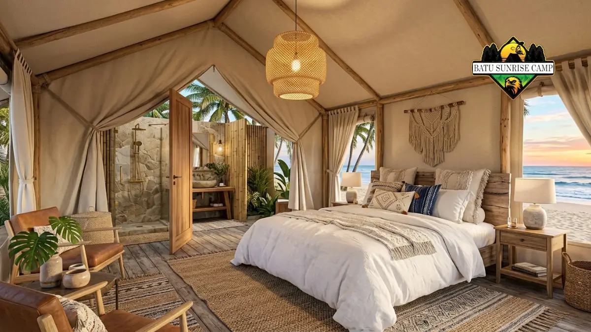

Harga glamping di pantai pada 2026 umumnya berkisar Rp500.000 hingga Rp1.800.000 per malam, tergantung tipe tenda, lokasi, fasilitas, dan musim kunjungan.
Berapa harga glamping di pantai per malam pada 2026?
Tarif glamping di pantai pada 2026 umumnya berada di kisaran Rp500.000 sampai Rp1.800.000 per malam, sesuai laporan media wisata Indonesia sepanjang 2026.
Laporan VIVA Bali pada September 2026 menyebut tarif sewa glamping pesisir berkisar Rp500.000 hingga Rp1.800.000 per malam.
Laporan tersebut menjelaskan bahwa angka itu bergantung pada tingkat kemewahan tenda dan lokasi, serta biasanya sudah mencakup sarapan, tiket masuk kawasan wisata, dan akses fasilitas pendukung. Sumber: VIVA Bali, September 2026.
Industry.co.id pada Juli 2026 memberi gambaran yang serupa untuk glamping secara umum, yaitu Rp500.000 hingga Rp1.600.000 per malam.
Media itu juga memperkirakan biaya makan sebesar Rp150.000 hingga Rp300.000 dan aktivitas sebesar Rp100.000 hingga Rp200.000, sehingga total berada di rentang Rp750.000 hingga Rp2.100.000. Sumber: Industry.co.id, Juli 2026.
Untuk contoh lokasi pantai yang populer, Traveloka pada September 2025 mencantumkan glamping bintang lima di kawasan Karangasem, Bali, yang dekat Ujung Beach dengan tarif mulai sekitar Rp900.000 per malam.
Angka ini menunjukkan bahwa tarif di destinasi wisata populer dapat berada di tengah hingga atas rentang harga nasional.
Semua angka di atas adalah perkiraan. Tarif dapat berubah sewaktu-waktu, sehingga pembaca perlu mengecek harga terbaru langsung ke pengelola sebelum memesan.
Apa itu glamping pantai dan untuk siapa cocok?
Glamping pantai adalah penginapan bergaya kemah mewah di tepi pantai yang menyediakan tempat tidur nyaman dan fasilitas mirip hotel, tanpa perlu membawa peralatan kemah sendiri.
Kata glamping berasal dari glamorous camping. Konsepnya menggabungkan suasana alam terbuka dengan kenyamanan, seperti kasur empuk, listrik, dan kamar mandi.
Pada glamping pantai, pengalaman utamanya adalah suara ombak, udara laut, dan pemandangan matahari terbit atau terbenam dari area penginapan.
Glamping pantai cocok untuk pasangan yang mencari suasana romantis, keluarga yang ingin liburan santai dengan aktivitas outdoor, dan kelompok teman yang ingin patungan biaya.
Konsep ini juga sesuai bagi wisatawan pemula yang ingin merasakan suasana berkemah tanpa risiko ketidaknyamanan.
Batasan glamping pantai perlu dipahami sebelum memesan. Tenda umumnya lebih terpapar angin, kelembapan, dan suara luar dibanding kamar hotel, dan cuaca dapat memengaruhi kenyamanan.
Pengelola biasanya mengatur kapasitas, jam tenang, dan aturan api unggun demi keselamatan tamu.
Apa saja faktor yang menentukan harga glamping di pantai?
Harga glamping pantai ditentukan oleh lokasi, tipe dan ukuran tenda, fasilitas, kapasitas tamu, serta waktu menginap, sehingga tarif dua tempat bisa berbeda jauh.
Lokasi adalah faktor terbesar. Glamping di destinasi pantai populer atau di kawasan resort dengan akses mudah cenderung lebih mahal dibanding lokasi yang lebih terpencil.
Jarak ke pantai juga berpengaruh, karena unit yang berada tepat di garis pantai umumnya dihargai lebih tinggi daripada unit di area belakang.
Tipe tenda menentukan kelas harga. Tenda standar dengan kamar mandi bersama biasanya lebih murah daripada tenda premium dengan kamar mandi dalam, pendingin ruangan, dan teras pribadi.
Ukuran unit dan kapasitas, misalnya untuk dua orang atau empat orang, juga mengubah tarif per malam.
Fasilitas tambahan meningkatkan biaya. Contohnya kolam renang, restoran, sarapan, jemputan, peralatan snorkeling, dan akses area pantai privat.
Kualitas kasur, jenis kamar mandi, dan ketersediaan listrik juga menjadi pembeda antara kelas ekonomi dan premium.
Waktu menginap ikut memengaruhi harga. Tarif akhir pekan dan musim libur biasanya lebih tinggi daripada hari kerja. Pembahasan lebih rinci tersedia di artikel waktu terbaik glamping di pantai dan pengaruhnya terhadap harga.
Bagaimana perbandingan harga glamping pantai berdasarkan kelasnya?
Glamping pantai dapat dibagi menjadi kelas ekonomi, menengah, dan premium, dengan selisih tarif yang mengikuti kualitas fasilitas, bukan hanya lokasi.
Pembagian berikut adalah estimasi kasar yang disusun dari rentang tarif Rp500.000 hingga Rp1.800.000 pada laporan 2026, dan bukan daftar harga resmi.
| Kelas | Estimasi tarif per malam | Ciri umum |
|---|---|---|
| Ekonomi | Rp500.000 – Rp800.000 | Tenda sederhana, fasilitas dasar, kamar mandi bisa bersama |
| Menengah | Rp800.000 – Rp1.200.000 | Kamar mandi dalam, sarapan, area duduk pribadi |
| Premium | Rp1.200.000 – Rp1.800.000 | Tenda luas, fasilitas resort, lokasi dekat garis pantai |
Kelas ekonomi cocok bagi wisatawan yang mengutamakan pengalaman bermalam di tepi pantai. Kelas menengah cocok bagi keluarga yang membutuhkan kenyamanan lebih.
Kelas premium cocok bagi wisatawan yang menginginkan pengalaman mirip resort dengan layanan lengkap.
Perlu diingat bahwa tarif di luar rentang ini tetap mungkin ada, terutama pada resort mewah atau saat musim puncak.

Interior tenda glamping premium dengan tempat tidur nyaman, kamar mandi batu alam, dan pemandangan laut saat senja.
Apa saja yang biasanya sudah termasuk dalam harga glamping pantai?
Harga glamping pantai biasanya sudah mencakup unit tenda, tempat tidur, dan sering kali sarapan, sedangkan makan lain dan aktivitas biasanya dihitung terpisah.
Menurut laporan VIVA Bali pada September 2026, tarif sewa pada glamping pesisir biasanya sudah termasuk sarapan, tiket masuk kawasan wisata, dan akses fasilitas pendukung.
Namun cakupan ini berbeda antarpengelola, sehingga pembaca perlu memeriksa rincian paket sebelum membayar.
Beberapa item yang sering dihitung terpisah adalah makan siang dan malam, sewa alat snorkeling atau kano, paket barbekyu, tambahan kasur, dan layanan jemputan. Biaya parkir dan biaya kebersihan juga kadang muncul pada tempat tertentu.
Cara terbaik membandingkan harga adalah menyusun daftar fasilitas yang sama untuk tiap kandidat.
Tenda dengan tarif lebih tinggi bisa lebih hemat bila sudah mencakup sarapan, tiket masuk, dan aktivitas. Panduan rincinya ada di artikel rincian biaya glamping pantai.
Bagaimana cara menghitung total budget glamping di pantai?
Total budget glamping pantai dihitung dengan menjumlahkan tarif tenda, makan, aktivitas, transportasi, dan cadangan biaya tak terduga untuk seluruh rombongan.
Gunakan rumus sederhana: tarif tenda per malam dikali jumlah malam, ditambah biaya makan yang belum termasuk, biaya aktivitas, transportasi pulang pergi, dan cadangan sekitar sepersepuluh dari total. Cadangan ini membantu bila ada tambahan seperti sewa peralatan atau makanan di luar paket.
Sebagai gambaran, Industry.co.id pada Juli 2026 memperkirakan total biaya satu malam Rp750.000 hingga Rp2.100.000, dengan komponen akomodasi, makan, dan aktivitas. Angka ini belum termasuk transportasi menuju lokasi.
Bila berangkat berkelompok, bagi biaya tenda menurut kapasitas unit. Tenda berkapasitas empat orang bisa lebih murah per kepala dibanding dua tenda untuk dua orang. Simulasi lengkap tiga skenario budget tersedia di artikel rincian biaya glamping pantai.
Bagaimana cara mendapatkan harga glamping pantai yang lebih hemat?
Harga glamping pantai dapat ditekan dengan menginap pada hari kerja, memesan lebih awal, berangkat berkelompok, dan membandingkan fasilitas yang termasuk dalam paket.
Menginap Senin sampai Kamis umumnya lebih murah dibanding Jumat sampai Minggu. Memesan jauh hari juga membantu mendapatkan unit yang diinginkan, terutama saat akhir pekan panjang. Industry.co.id menyarankan pemesanan jauh hari untuk akhir pekan.
Pertimbangkan pula lokasi alternatif yang dekat dengan pantai populer tetapi tidak berada tepat di garis pantai.
Selisih jarak beberapa ratus meter sering kali menurunkan tarif tanpa mengurangi pengalaman secara signifikan.
Tips lengkap untuk memilih paket, negosiasi kelompok, dan menghindari biaya tersembunyi dibahas di artikel rincian biaya glamping pantai.
Kapan waktu terbaik menginap di glamping pantai?
Waktu paling nyaman untuk glamping pantai umumnya musim kemarau, yaitu April sampai Oktober, karena cuaca lebih stabil, tetapi permintaan dan tarif juga cenderung lebih tinggi.
VIVA Bali pada September 2026 menyebut musim kemarau antara April dan Oktober sebagai waktu ideal untuk menikmati glamping pantai.
Pada periode ini, peluang hujan dan gelombang tinggi umumnya lebih rendah, sehingga aktivitas pantai lebih mudah dilakukan.
Musim hujan bukan berarti tidak bisa menginap. Tarif bisa lebih ringan, tetapi risiko hujan deras, angin kencang, dan gelombang tinggi meningkat. Pembaca sebaiknya memeriksa prakiraan cuaca dan kondisi laut dari BMKG sebelum berangkat.
Detail perbandingan hari kerja dan akhir pekan, serta strategi memilih tanggal, ada di artikel waktu terbaik glamping di pantai.
Apa saja kesalahan umum saat memilih glamping pantai berdasarkan harga?
Kesalahan umum saat memilih glamping pantai adalah hanya melihat tarif terendah, mengabaikan fasilitas yang termasuk, dan tidak memeriksa kebijakan pembatalan.
Pertama, membandingkan harga tanpa membandingkan isi paket. Tenda murah tanpa sarapan dan tanpa tiket masuk bisa menjadi lebih mahal dibanding tenda menengah yang sudah lengkap.
Kedua, tidak memeriksa kapasitas dan biaya tamu tambahan. Beberapa pengelola membebankan biaya untuk tambahan orang atau kasur.
Ketiga, mengabaikan ulasan terbaru. Kondisi kebersihan, kamar mandi, dan pelayanan dapat berubah, sehingga ulasan beberapa bulan terakhir lebih relevan.
Keempat, tidak menanyakan kebijakan pembatalan dan penjadwalan ulang, padahal cuaca pantai bisa berubah cepat.
Apa kelebihan dan batasan glamping pantai dibanding hotel pantai?
Glamping pantai menawarkan suasana alam yang lebih dekat dan pengalaman unik, tetapi hotel pantai umumnya unggul dalam kedap suara, pendingin ruangan, dan kenyamanan saat cuaca buruk.
Kelebihan glamping pantai adalah suasana yang lebih menyatu dengan alam, konsep yang cocok untuk momen spesial, dan tarif yang bisa lebih bersaing pada kelas ekonomi. Banyak tamu juga menyukai aktivitas tambahan seperti api unggun dan melihat bintang.
Batasannya, tenda lebih rentan terhadap angin, kelembapan, serangga, dan suara. Fasilitas seperti pendingin ruangan atau air panas tidak selalu tersedia di semua unit.
Pilihan terbaik bergantung pada tujuan. Wisatawan yang mengutamakan pengalaman alam dapat memilih glamping, sedangkan wisatawan yang mengutamakan kepastian kenyamanan bisa memilih hotel pantai.
Kesimpulan
Harga glamping di pantai pada 2026 umumnya mulai dari sekitar Rp500.000 dan dapat mencapai Rp1.800.000 per malam. Angka akhir bergantung pada lokasi, kelas tenda, fasilitas, dan waktu menginap.
Langkah praktis sebelum memesan: tentukan budget total, bandingkan minimal tiga pilihan dengan daftar fasilitas yang sama, pilih hari kerja bila fleksibel, periksa kebijakan pembatalan, dan cek prakiraan cuaca.
Dengan langkah ini, wisatawan dapat memilih glamping pantai yang sesuai kebutuhan tanpa membayar lebih dari yang diperlukan.